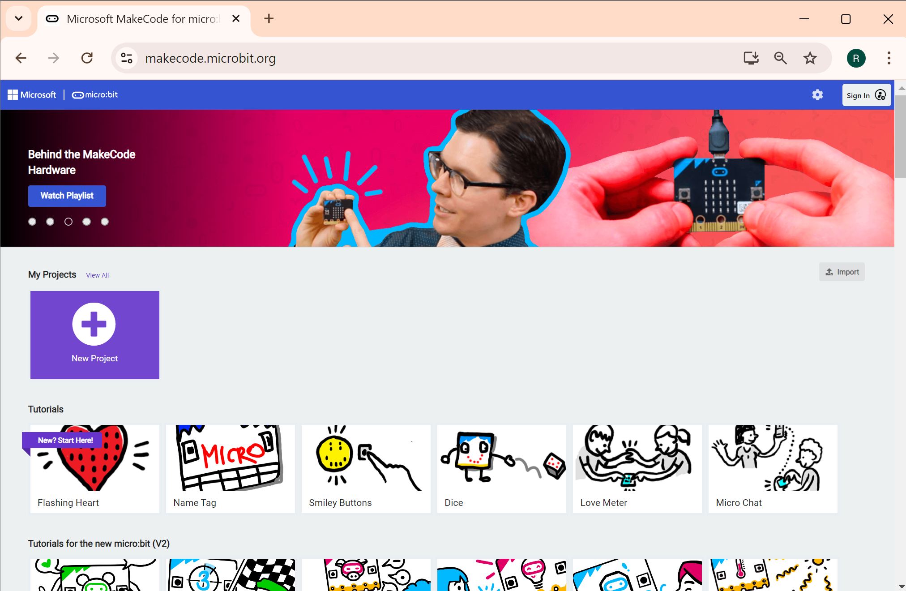

ตัวอย่างการรับส่งข้อมูลไร้สายระหว่างบอร์ด Micro:bit#
Keywords: BBC Micro:bit, Microsoft MakeCode, TypeScript, Wireless Data Communication, 2.4GHz Radio Interface, Event-Driven Programming
▷ บอร์ดไมโครบิตและการสื่อสารข้อมูลแบบไร้สาย#
บอร์ดไมโครคอนโทรลเลอร์ "ไมโครบิต" (Micro:bit) ทั้งรุ่นแรกและรุ่นที่สอง (v1 & v2) สามารถรับส่งข้อมูลและสื่อสารกันได้แบบไร้สาย (Wireless Data Communication) เนื่องจากใช้ชิปของบริษัท Nordic Semiconductor รุ่น nRF51822 และ nRF52833 ตามลำดับ ภายในชิปมีวงจรและเฟิร์มแวร์สำหรับการสื่อสารข้อมูลไร้สายด้วยคลื่นวิทยุย่านความถี่ 2.4GHz และรองรับโพรโตคอล Bluetooth / BLE ด้วย
บทความนี้นำเสนอตัวอย่างการเขียนโค้ดด้วย MakeCode JavaScript (JS) / Static TypeScript (STS) เพื่อรับส่งข้อมูลระหว่างบอร์ดไมโครบิต 2 บอร์ด และสำหรับการเขียนโค้ดเพื่อใช้งานกับบอร์ดไมโครบิต ก็ใช้เพียงเว็บเบราว์เซอร์ เช่น Google Chrome และไปยังเว็บไซต์ MakeCode Editor for Micro:bit (https://makecode.microbit.org/) แล้วเริ่มต้นโดยการสร้างโปรเจกต์ใหม่ (New Project) ตามลำดับ
MakeCode Editor for Micro:bit รองรับการเขียนโค้ดหลายรูปแบบ ทั้งแบบการต่อบล็อก (Block-based Coding) และการเขียนโค้ดด้วยภาษา JavaScript (JS) / Static TypeScript หรือ Python อีกทั้งยังสามารถจำลองการทำงานของโค้ดได้ (MakeCode Micro:bit Simulator) โดยยังไม่จำเป็นต้องใช้งานบอร์ดทดลองจริง
จุดเด่นของซอฟต์แวร์อีกประการหนึ่งคือ ความสามารถในการแปลงให้เป็นโปรแกรมในรูปแบบการต่อบล็อก หรือสลับไปมาระหว่างโหมดการเขียนโค้ดด้วยภาษา JS / Python ได้โดยอัตโนมัติ
▷ การใช้งาน Multi-Board Editor#
เนื่องจากจะต้องใช้บอร์ดไมโครบิต 2 จำนวนบอร์ด และทำงานพร้อม ๆ กัน ดังนั้นถ้าจะจำลองการทำงานของบอร์ดทั้งสอง จะต้องเปิดใช้งาน Multi-Board Editor (https://makecode.com/multi#)
ผู้ใช้สามารถสร้างโปรเจกต์ (กดปุ่ม "New Project") แยกกันระหว่าง 2 บอร์ดที่จะใช้งาน แล้วเปิดโปรเจกต์ใน Editor ในส่วนการทำงานทางด้านซ้ายมือ และขวามือตามลำดับ

รูป: MakeCode Multi-Board Editor

รูป: ตัวอย่างการสร้างโปรเจกต์และทดลองเขียนโค้ด JS (JavaScript)

รูป: ตัวอย่างการจำลองการทำงานของโปรแกรม (Run simulator in fullscreen) หรือ หยุดการทำงานชั่วคราว ผู้ใช้สามารถกดปุ่ม A หรือ B ได้ รวมถึงการเขย่าบอร์ด (คลิกตรงจุดสีขาวที่มีข้อความ SHAKE)

รูป: ตัวอย่างการแปลงโค้ด JS ให้อยู่ในรูปแบบการต่อบล็อก (ซ้ายมือ) และ Python (ขวามือ)
▷ ตัวอย่างโค้ดสาธิต#
การทำงานของโค้ดตัวอย่างในบทความนี้ มีลักษณะการทำงานดังนี้
- ใช้บอร์ด Micro:bit จำนวน 2 บอร์ด และใช้โค้ดเหมือนกัน
- เมื่อเริ่มต้นทำงาน โค้ดตัวอย่างตรวจสอบดูว่า มีการกดปุ่ม Button A หรือ มีการเขย่าบอร์ด (Shake) หรือไม่
- ถ้ามีการเขย่าบอร์ด ให้เลือกไอคอน (Icon) ถัดไปจากรายการที่กำหนดไว้ (มี 3 ตัวเลือก ได้แก่
Image.Heart,Image.Happy,Image.Sad) และกดปุ่ม Button A ให้ส่งหมายเลขของไอคอนไปยังอีกบอร์ดหนึ่ง เพื่อนำไปแสดงผล - ถ้าบอร์ดใดได้รับข้อความจากอีกบอร์ดหนึ่ง ก็ให้แสดงรูปสัญลักษณ์หรือไอคอนตามหมายเลขที่ได้รับมา บนแผง LED 5x5 พิกเซล
- แต่ถ้ากดปุ่ม Button B ก็จะแสดงระดับความแรงของสัญญาณคลื่นวิทยุที่ได้รับจากอีกบอร์ดหนึ่ง (Received Signal Strength Indicator) โดยแบ่งค่าตัวเลขให้อยู่ในช่วง 4 ระดับ
// MakeCode Microbit Demo:
// Shake to select the next icon.
// Click to send the selected icon.
let icons = [
IconNames.Heart,
IconNames.Happy,
IconNames.Sad
]
let selectedIconIndex = 0
basic.showIcon(icons[selectedIconIndex])
// Initialize with a very low RSSI value (lowest)
let latestSignalStrength = -128
// Set the radio group to ensure both boards
// are communicating on the same channel.
radio.setGroup(1)
// Send Tx power (0=lowest, 7=highest)
radio.setTransmitPower(7)
// Function to pick and send a random icon
function selectIcon() {
// Pick the next icon
selectedIconIndex = (selectedIconIndex+1) % icons.length;
// Show the icon on the LED display
basic.showIcon(icons[selectedIconIndex])
}
// When button A is pressed
input.onButtonPressed(Button.A, function () {
// Show the icon on the LED display
basic.showIcon(icons[selectedIconIndex])
// Send the Icon index
radio.sendNumber(selectedIconIndex)
})
// When the micro:bit is shaken
input.onGesture(Gesture.Shake, function () {
selectIcon()
})
// When a number (icon) is received over the radio
// on either micro:bit
radio.onReceivedNumber(function (receivedIconIndex: number) {
serial.writeLine("" + receivedIconIndex )
// Show the received icon on the LED display
basic.showIcon(icons[receivedIconIndex])
// Get and store the signal strength (RSSI)
// of the last received message
latestSignalStrength =
radio.receivedPacket(RadioPacketProperty.SignalStrength)
// serial.writeLine("" + latestSignalStrength)
// Optional: Play a sound when an icon is received
// Plays middle C for half a beat
music.playTone(262, music.beat(BeatFraction.Half))
})
// When button B is pressed, show signal strength
input.onButtonPressed(Button.B, function () {
if (latestSignalStrength > -60) {
// Strong signal (Full 5x5 square)
basic.showLeds(`
# # # # #
# # . # #
# . . . #
# # . # #
# # # # #
`)
} else if (latestSignalStrength > -70) {
// Medium signal (3x3 square)
basic.showLeds(`
. # # # .
# # . # #
# . . . #
# # . # #
. # # # .
`)
} else if (latestSignalStrength > -85) {
// Weak signal (2x2 square)
basic.showLeds(`
. . . . .
. # # # .
. # . # .
. # # # .
. . . . .
`)
} else {
// Very weak signal (single dot in the center)
basic.showLeds(`
. . . . .
. . . . .
. . # . .
. . . . .
. . . . .
`)
}
pause(1000)
basic.clearScreen()
})
การทำงานของโปรแกรมมีลักษณะที่เรียกว่า Even-driven Programming ซึ่งจะมีการตรวจสอบเหตุการณ์ตามที่กำหนดไว้ และทำคำสั่งที่เกี่ยวข้องโดยอัตโนมัติ เช่น
- การใช้คำสั่ง
input.onButtonPressed(...)เพื่อตรวจสอบว่า มีการกดปุ่ม Button A หรือ Button B - การใช้คำสั่ง
radio.onReceivedNumber(...)เพื่อตรวจสอบว่า ได้รับข้อความ (ตัวเลข) จากบอร์ดอื่นผ่านทาง Radio Interface หรือไม่
ถ้ามีทำคำสั่งของฟังก์ชันภายในตามที่ได้ออกแบบไว้
input.onButtonPressed(Button.A, function () {
// perform a task or action
})
input.onButtonPressed(Button.B, function () {
// perform a task or action
})
radio.onReceivedNumber(function (receivedIcon: number) {
// perform a task or action
})
ในกรณีที่มีการสร้างสัญญาณเสียง ถ้าเป็นบอร์ด Micro:bit v1 จะต้องใช้ลำโพงเสียงมาต่อที่ขา Pin 0 และ GND ของบอร์ด แต่ถ้าเป็น Micro:bit v2 ก็มีวงจรและลำโพงเสียงขนาดเล็กอยู่บนบอร์ดแล้ว

รูป: ตัวอย่างการจำลองการทำงานของบอร์ดไมโครบิต ในกรณีที่มีการใช้คำสั่งเพื่อสร้างสัญญาณเสียง
ในกลุ่มคำสั่ง music เช่น music.playTone(...)
รูป: ตัวอย่างการจำลองการทำงานของบอร์ดไมโครบิต 2 บอร์ดพร้อมกัน
รูป: บอร์ด Micro:bit v2.20 ที่ได้นำมาทดลอง มีแบตเตอรี่ ทำให้สะดวกต่อการนำไปทดลองใช้งาน ไม่ต้องเสียบสาย USB

รูป: บอร์ด Micro:bit แสดงรูปไอคอนที่มีการส่งระหว่างสองบอร์ด
▷ ตัวอย่างเพิ่มเติมสำหรับการใช้งาน Micro:bit Radio Interface#
บนหน้าเว็บไซต์ของ Microsoft MakeCode Project มีตัวอย่างโปรเจกต์ หรือโค้ดตัวอย่างในกลุ่มที่เรียกว่า "Radio Games" สาธิตการเขียนโค้ดเพื่อการสื่อสารข้อมูลแบบไร้สายด้วย Radio Interface

รูป: รายการโปรเจกต์ตัวอย่างแบ่งตามกลุ่มหรือหัวข้อ เช่น Radio Games
โค้ดตัวอย่างในบทความนี้ จะมีหลักการทำงานคล้ายกับตัวอย่าง Mood Radio ซึ่งมีลักษณะตามรูปของโค้ดบล็อกต่อไปนี้
รูป: โค้ดบล็อกสำหรับโปรเจกต์ Mood Radio
▷ กล่าวสรุป#
บทความนี้ได้นำเสนอตัวอย่างการเขียนโค้ด เพื่อสาธิตการใช้งานบอร์ดไมโครบิตจำนวน 2 บอร์ด สามารถรับส่งข้อมูลแบบไร้สายได้ และนำไปทดลองกับอุปกรณ์จริงได้หลังจากจำลองการทำงานของโค้ด และตรวจสอบผลการทำงานในเบื้องต้นแล้ว ในการทดลองจริง ก็อาจวางบอร์ดให้มีระยะห่างกัน และลองกดปุ่มหรือเขย่าบอร์ดเพื่อส่งสัญลักษณ์ (ไอคอน) ไปยังอีกบอร์ดหนึ่ง และดูว่า สามารถรับข้อความได้จริงหรือไม่
บทความที่เกี่ยวข้อง
This work is licensed under a Creative Commons Attribution-ShareAlike 4.0 International License.
Created: 2024-09-28 | Last Updated: 2024-10-01